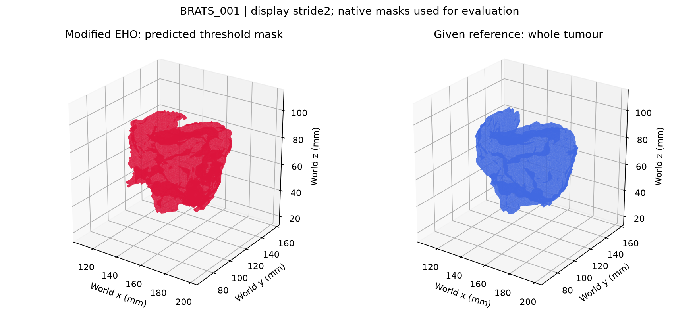
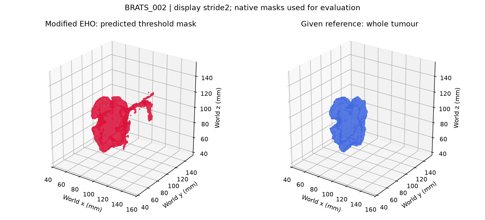
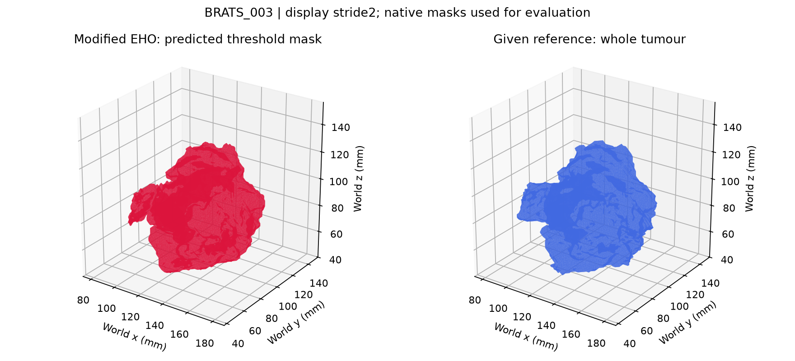

BRATS_001

Modified EHO mean Dice: 0.8675
Direct Otsu Dice: 0.8707
Repository documentation · Pushkar Tuse and Nitya Mohta
Open this file locally after cloning or downloading the complete repository. Each interactive viewer is self-contained and supports rotating, zooming and toggling surfaces.
These are exploratory results from three labelled MRI volumes. Predicted whole-tumour masks and supplied reference annotations are separate outputs. The reconstructed imaging stages are new implementations; they do not authenticate the original manuscript figures.
BRATS_001 viewer screen recording supplied by the author, 11 October 2026; duration approximately 61 seconds. This is a presentation reference, not an additional experiment.

Modified EHO mean Dice: 0.8675
Direct Otsu Dice: 0.8707

Modified EHO mean Dice: 0.4305
Direct Otsu Dice: 0.4651

Modified EHO mean Dice: 0.9120
Direct Otsu Dice: 0.9208
Modified EHO values average three random seeds per case. Otsu is deterministic. Across these three cases, mean Dice is 0.737 for modified EHO and 0.752 for direct Otsu. Native masks determine Dice; display meshes use stride2 sampling.